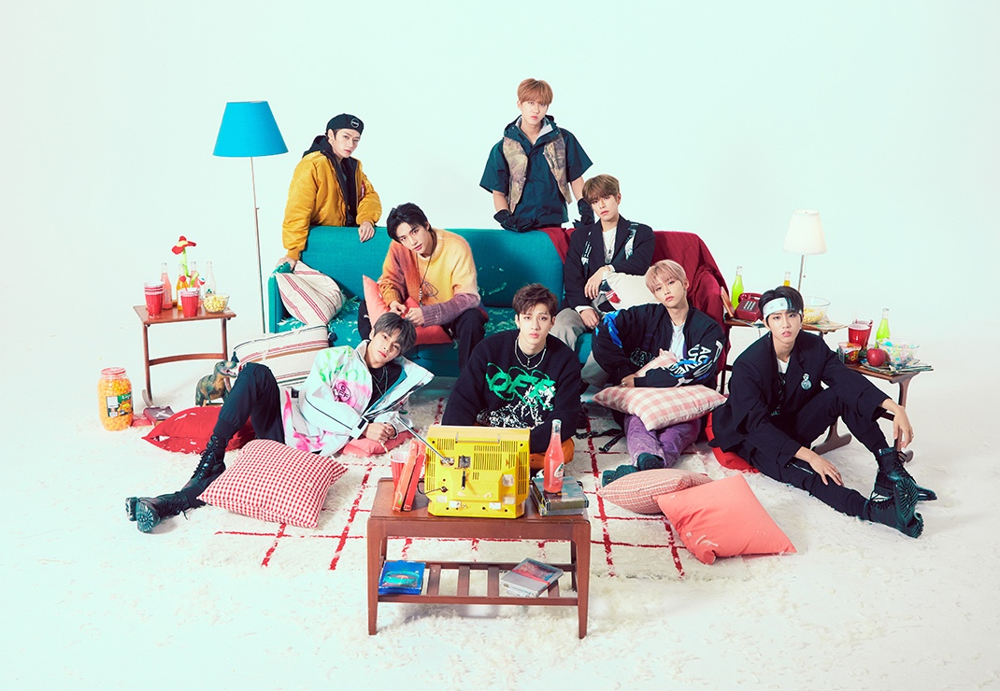
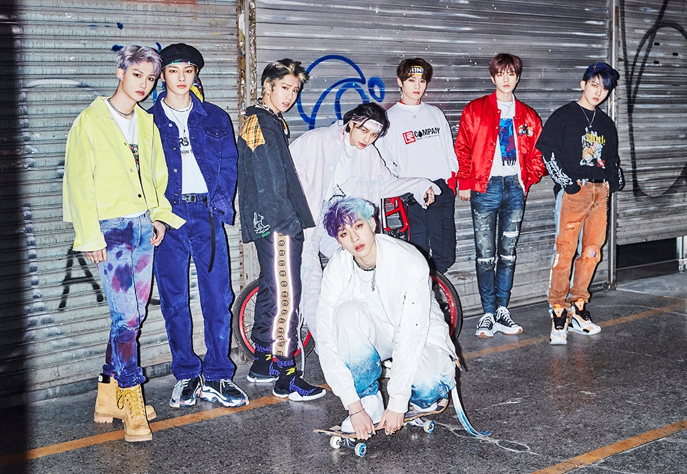
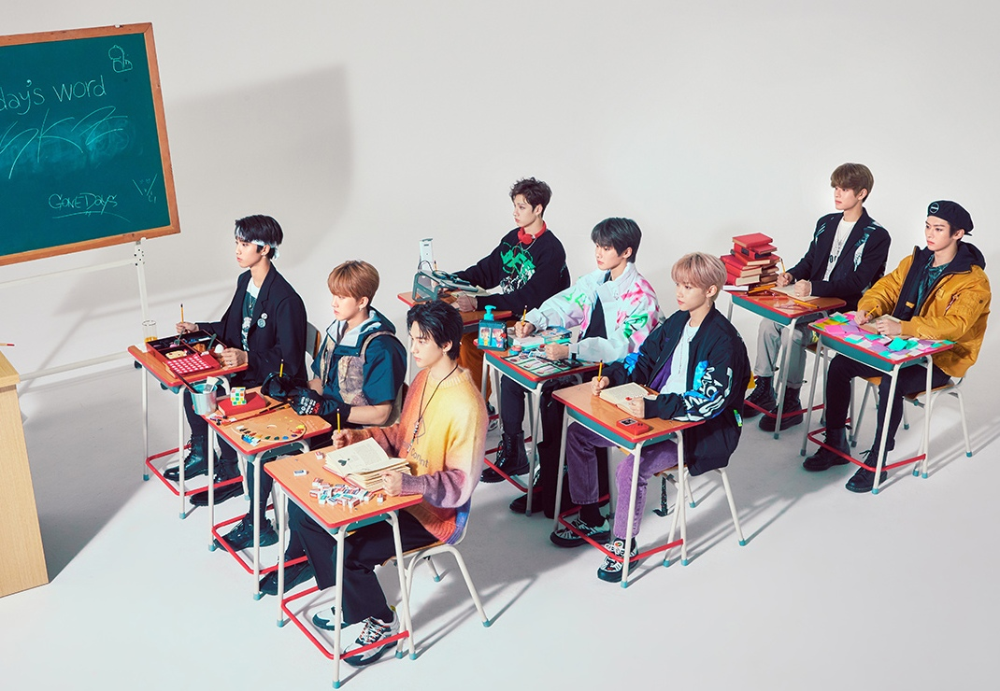

Stray kids is a South Korean Boy Group under JYP Entertainment. The group officially
debuted on March 25th, 2018 with 9 members totally with the Track 'District 9'.
The members were formed by the groups leader Bang Chan and the members were chosen
by competing in the survival show "Stray Kids".
The members of the group include - Bang Chan, Lee Know, Chang Bin, Han, Felix,
Hyun Jin, Seung Min, Woo Jin and IN. However Woo Jin left the group on
October 27, 2018 and Stray kids have been promoting with 8 members since then.
Stray kids are a self-producing group. They do music production, composing, writing lyrics,
mixing, choreography, many more and at such a young age!
STRAYKIDS WHO?


3- Racha is the production sub-group of Stray Kids.
This sub-group includes the members Bang Chan, Chang Bin and Han.
These members are mainly reponsible for the group's production, lyric
writing and mixing the songs. Also all the 3 members can Rap and Sing.
STRAY KIDS - 3RACHA

Dance Racha is the dance/choreography sub-group of Stray Kids. This sub-group
include Lee Know, Hyun Jin and Felix. All these members showcase
powerful performances. Prior to joining Stray Kids, Lee Know was a supporting dance
performer for the K-pop group BTS!
STRAY KIDS - DanceRacha

Vocal Racha is the Vocal sub-group of Stray Kids. This sub-group
include Seung Min and IN. Despite being the maknae (youngest), IN
loves to sing trot music and Seung Min has the voice as sweet as honey . Seung Min is the Main Vocal in Stray Kids and
IN is the Lead Vocalist.
STRAY KIDS - VocalRacha